Erst Geduld, dann ein Torfestival: SCH gewinnt gegen Wacker mit 4:0
Es brauchte Geduld, etwas Nervenstärke und wieder einmal Maciej Wolanski. Der SCH hat am 12. Spieltag der Thüringenliga den FSV Wacker 90 Nordhausen mit 4:0 (1:0) besiegt. Vor 350 Zuschauern im Gesundbrunnenstadion war es lange ein zähes Stück Arbeit. Dann öffnete ein Strafstoß kurz vor der Pause die Tür, und danach lief es fast von allein.
Mühsame erste Hälfte
Auf dem Papier war die Sache klar. Der Tabellenzweite empfing den Fünfzehnten. Wer deshalb aber einen lockeren Nachmittag erwartet hatte, musste umdenken. Die Blau-Weißen taten sich in der ersten Halbzeit schwer, fanden kaum ein Durchkommen und brauchten viel Geduld. Nordhausen hielt die Partie lange offen.
Wolanski löst den Knoten vom Punkt
In der 39. Minute gab es dann Strafstoß für den SCH. Wolanski verwandelte zum 1:0. Wieder einmal brachte ein Elfmeter ein festgefahrenes Spiel in Bewegung. Mit diesem Treffer ging es in die Kabinen. Die Führung zur Pause nahm dem Spiel der Gastgeber die Last, die es bis dahin so schwerfällig gemacht hatte.
Nach dem Wechsel bricht der Widerstand
Die zweite Halbzeit zeigte ein anderes Bild. Mit dem Vorsprung im Rücken spielte die Ludwig-Elf befreiter auf, und Nordhausen konnte das Tempo immer seltener mitgehen. In der 59. Minute legte Wolanski nach und erhöhte mit seinem zweiten Treffer an diesem Tag auf 2:0. Spätestens jetzt war die Partie entschieden. Zehn Minuten später machte Artur Voilenko per Kopf das 3:0 (69.). Die Gäste fanden keine Antwort mehr, während die Hausherren weiter nach vorn drängten. Den Schlusspunkt setzte Pascal Köhler in der 79. Minute: Mit einem schönen Heber traf er zum 4:0. Aus einem lange mühsamen Nachmittag war doch noch ein deutlicher Heimsieg geworden.
Die Abwehr bleibt das Fundament
Fast noch mehr als die vier Tore spricht die Null auf der anderen Seite für die Mannschaft. Neun Gegentore nach zwölf Spielen bedeuten die beste Defensive der Liga. Auch an schwierigen Tagen lässt die Ludwig-Elf hinten kaum etwas zu, und vorn reicht dann oft ein Moment, um den Bann zu brechen. Mit nun acht Siegen, zwei Unentschieden und zwei Niederlagen stehen die Blau-Weißen bei 26 Punkten und 24:9 Toren auf Rang zwei. Seit sechs Spielen ist der SCH ungeschlagen.
Ein Sieg der Geduld
Schön war es nicht immer, verdient war es allemal. Das sah auch Trainer [Vorname] Ludwig so: „Die erste Halbzeit war sehr zäh, das hat mir nicht gefallen. Aber solche Spiele gibt es auch. Am Ende zählen die drei Punkte.“ Seine Mannschaft ließ sich davon nicht aus der Ruhe bringen, blieb hinten stabil und schlug nach dem Führungstreffer konsequent zu. Der SCH hat diesen Test bestanden und seine Position in der Spitzengruppe gefestigt.
Ausblick
Weiter geht es am Samstag, 21. November, um 14 Uhr wieder vor eigenem Publikum. Dann ist der SV 09 Arnstadt zu Gast. Die Serie von sechs ungeschlagenen Spielen soll dort weiter wachsen.
Spieldaten
1. SC 1911 Heiligenstadt – FSV Wacker 90 Nordhausen 4:0 (1:0)
1. SC 1911 Heiligenstadt
Fröhlich – Wolanski (73. Opfermann) – Köhler – Abdoul Aziz – Aschoff (73. Fiedler) – Jeschke – Göbel – M. Lerch (73. Gorges) – Hoch – Voilenko – Michalek
FSV Wacker 90 Nordhausen
Treiber – Schleusing – Langner – Akhtyrskyi – Ludwig – Blanke – Riemekasten – Hoche (77. Dos Santos) – Knaus (68. Strode) – da Silva (61. Günther) – Frömmel (89. Weiss)
Schiedsrichter
Tarik El-Hallag
Zuschauerzahl
350
Tore
1:0 Wolanski (39.FE), 2:0 Wolanski (59.), 3:0 Voilenko (69.), 4:0 Köhler (78.)
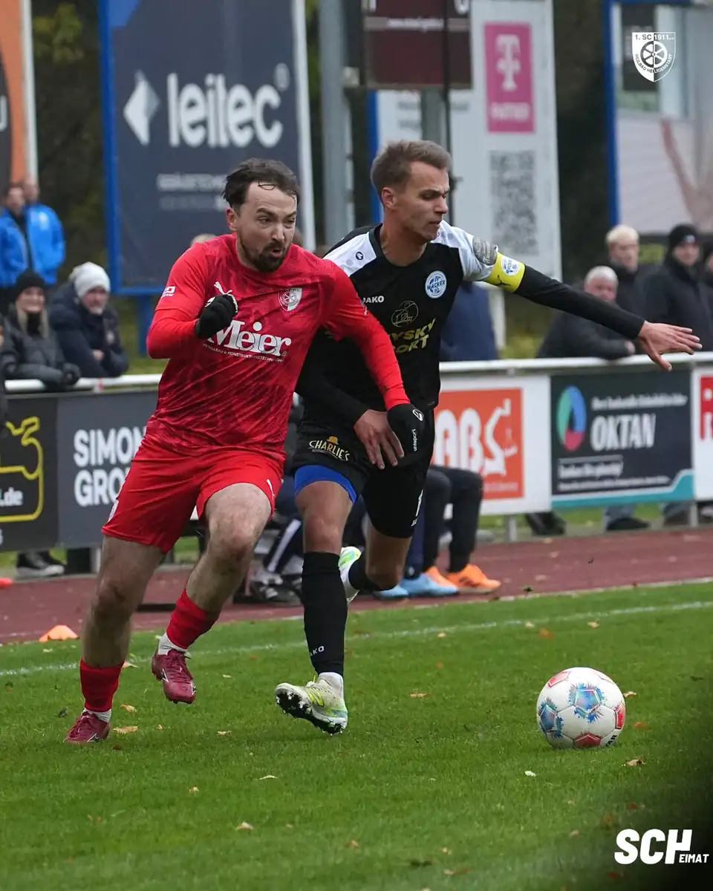
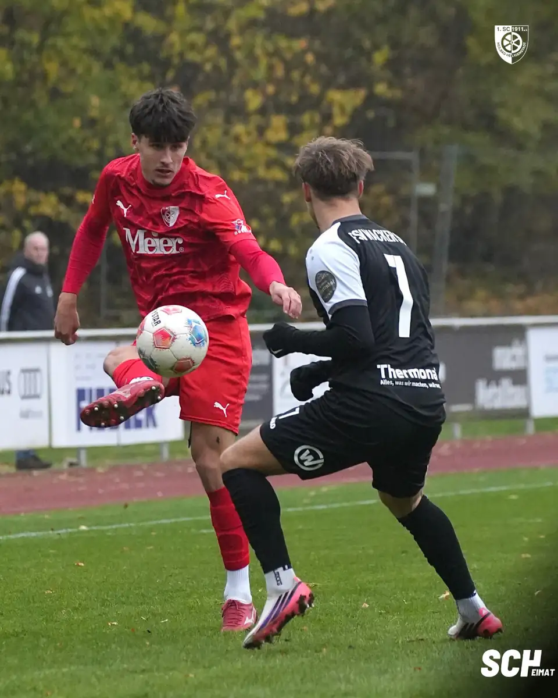
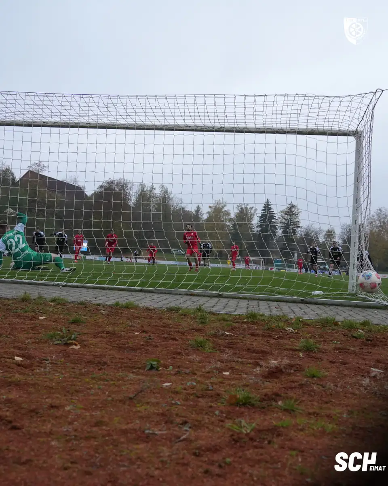
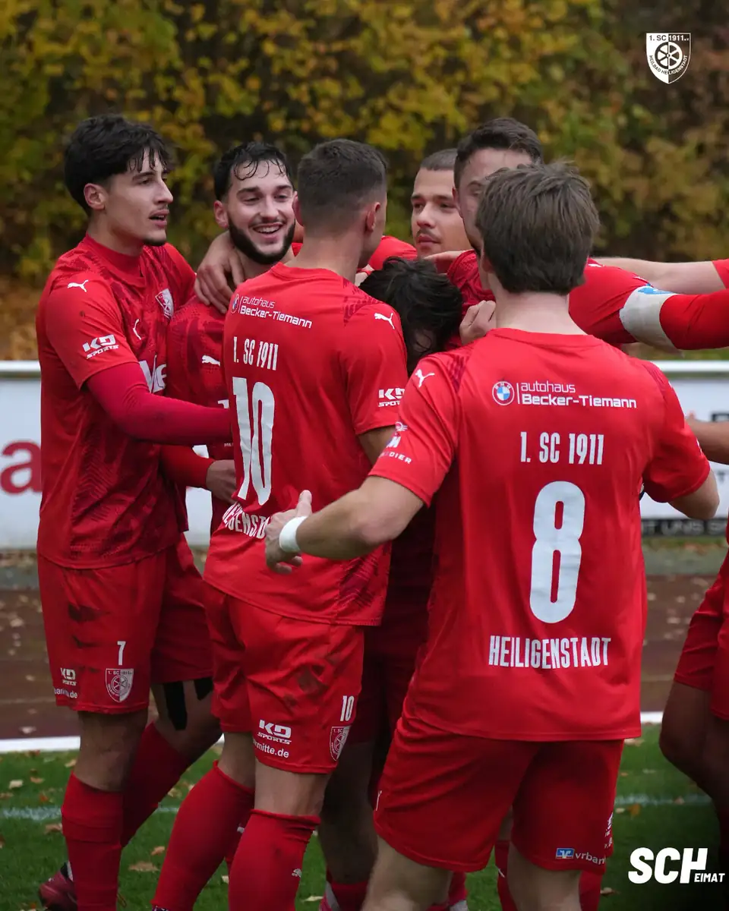
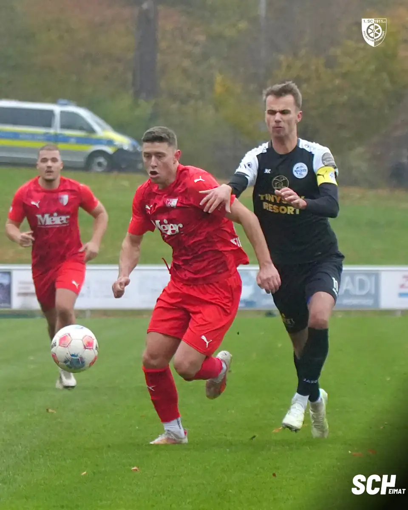
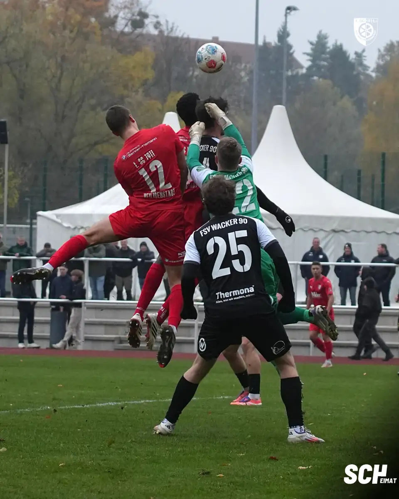
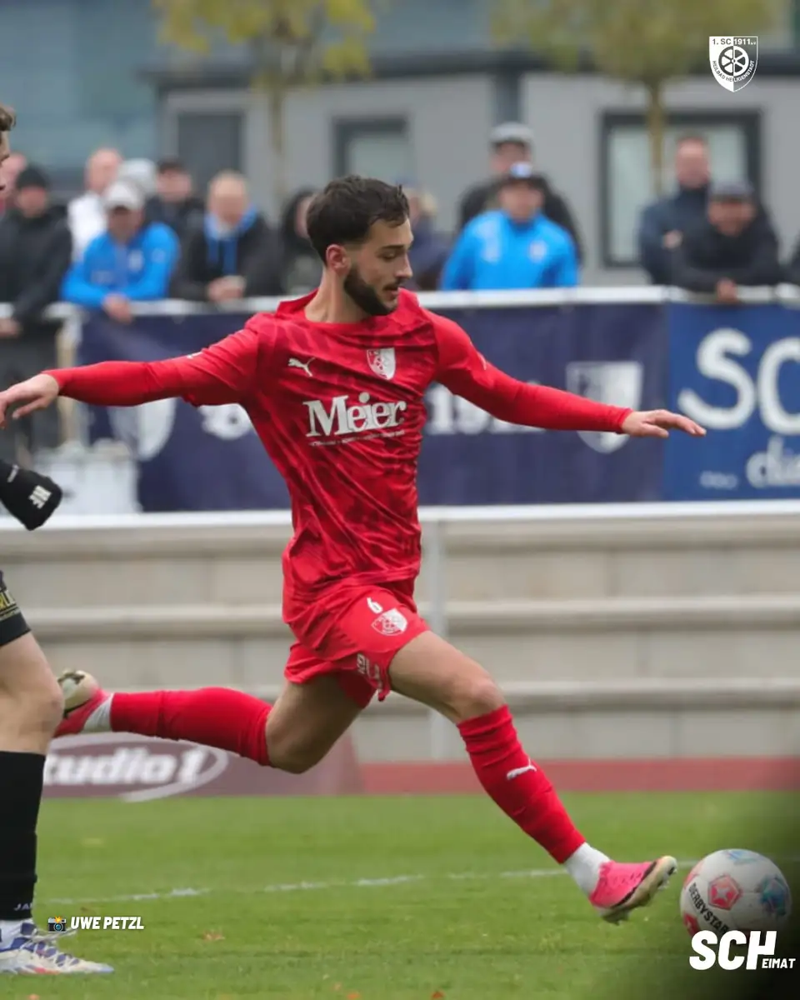
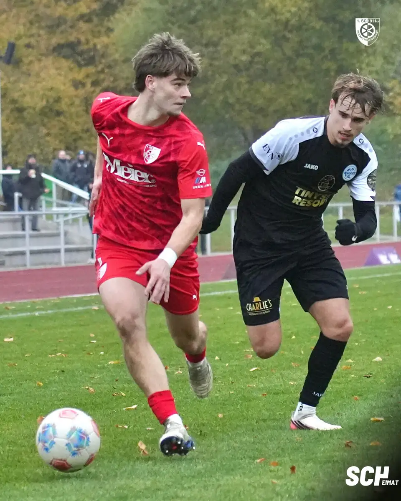
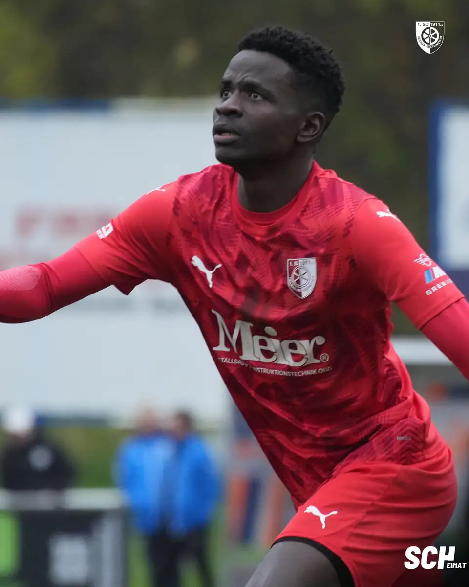
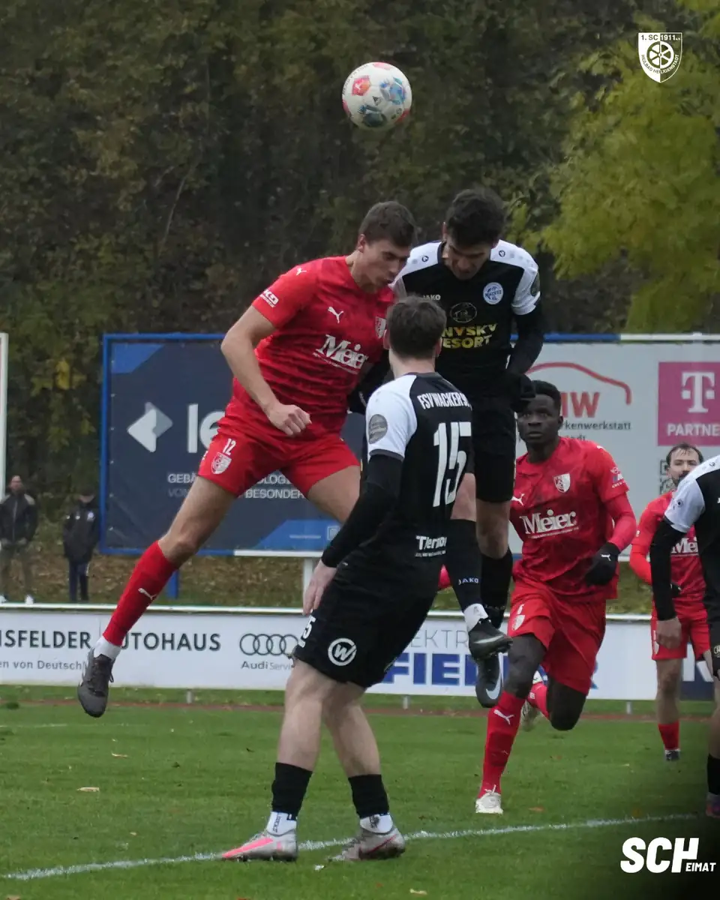
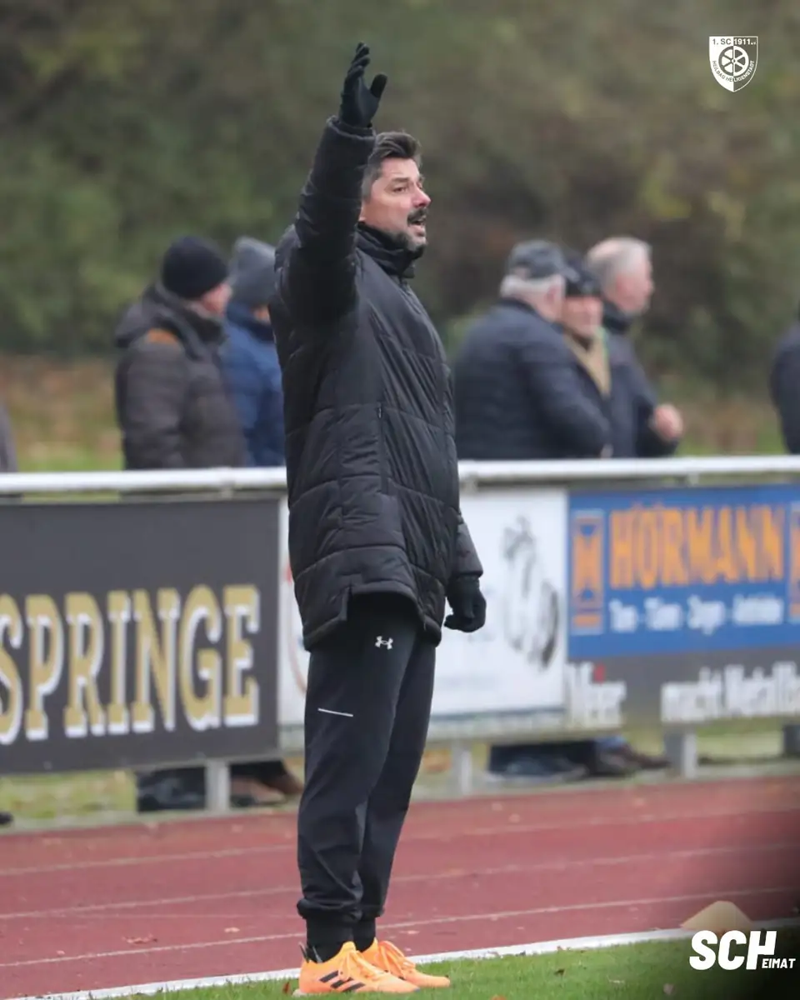
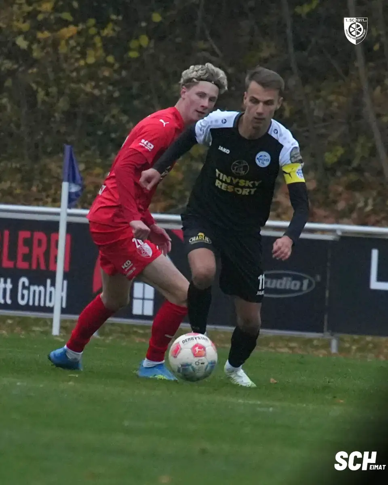
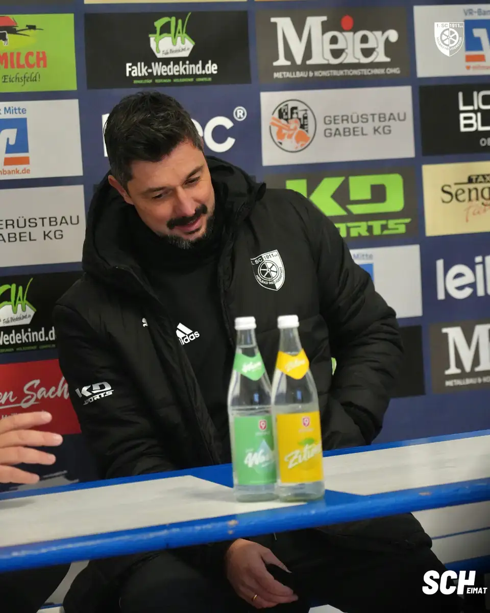